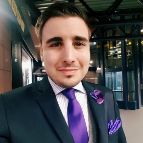
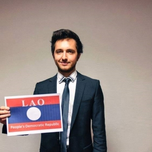

HISTORIC SECURITY COUNCIL
Download Study GuideCOUNTRIES: United States of America, China, Russia, United Kingdom, France, Cuba, Iraq , Venezuela, Chile , Brazil, Japan, Iran , Syria, Turkey, Israel
The Security Council was established as one of the six principal organs of the United Nations on October 24, 1945 with the ratification of the United Nations Charter.1 Chapters V, VI, VII, VIII, and XII of the Charter detail the composition, functions and powers of the Council. In Article 24, the Council is tasked with the primary responsibility of maintaining international peace and security in accordance with the principles of the UN. Thus, the Council is empowered with the ability to respond to threats of international security through political, economic, and military means.
The Council can also call upon other member states or regional organizations to negotiate a peaceful settlement. If conflict persists, the Council will enact resolutions that employ its wide range of economic, political, and military tools to prevent the escalation of violence. For instance, Council resolutions often formally condemn aggressors and impose economic sanctions that detrimentally impact the economy of an aggressor and thereby deter further acts of violence.
CUBAN MISSILE CRISIS
The Cuban Missile Crisis is one of the most significant moments of Cold War as it was one of the most dangerous and abrupt confrontation between United States and the Soviet Union. This moment is historic as this was the moment which came closest to a nuclear confrontation between the two powers. Numerous miscommunications between the two sides played out to this build up. The White House and the Kremlin level has relatively little input from the respective bureaucracies which is typically expected in foreign policy process.US INVASION OF IRAQ
The Iraq War often known as the Second Gulf War is famous for the defeat of Saddam Hussein. A complex history can be traced behind the invasion of the Unites States though. After the First Gulf War, a UN mandate was passed called Resolution 687. This mandate pronounced the destruction of all long- range missiles, nuclear and chemical weapons by Iraq. A change of government was initiated in 1998 by the United States and finally the George Bush government led the invasion in 2003. The war was supposed to be a quick affair but repercussions can be felt till today, thirteen years later as well. Questions of breach of sovereignty of member states and lack of respect for UN mandates often arise in reflection of this war.Historic Security Council
President: Can Balcioglu
“Hi Delegates im Can "John" Balcioglu I’m a Communications Associate based out of Ankara Turkey for United Ambassadors. I’ve been doing MUN for a long time and this will be my 60th conference. I majored in History at Istanbul Bilgi University and i ran my own MUN organization for many years. Along with my UA duties I’m also an advisor for a lingerie company called Agent Provocateur. I am a huge fan of Beşiktaş and i attend its games regularly. I am looking forward to the second edition of the conference and hope it will be a great experience.
Thank You”
Vice president: Arthur Francois

Arthur François’ in a nutshell
Involved in the world of Model United Nations for almost 3 years, Arthur participated a long-running MUN training through MunWalk, the MUN association of his university, Sciences Po Lille. He then participated to several conferences such as the Harvard World MUN as a delegate. Desiring to pursue his MUN career with a gavel in his hands, he chaired last year the UNODC in Stockholm MUN and AUC MUN will be his third time as a Chair, in the wake of JagIMUN.
As an extend of his MUN passion, Arthur currently lives in Sweden as an exchange student in the prestigious Lund University, focusing on Peace and Conflicts studies and International Relations. He will also attend an internship this summer in Tanzania in a NGO working hand-in-hand with UNICEF to focus on women rights.
Fluent both in French and English, Arthur is also perfecting his Italian while learning Spanish and German. He has several interests such as Italian cinema, literature, traveling and would be glad to talk about around a couple of Belgium Beers (his favourite drink that accompanied all events of his life since high-school). Nonetheless, any attempt to corrupt him by offering him a beer would be first welcomed, but then professionally declined. Arthur also practises violin since he turned 5, and plays the guitar and drums as hobbies.
Arthur is honoured to serve you as President of the Committee and is looking forward to meet you all.
Reformed Historic Security Council
President: David Radji
“My name is David Radji and I am currently studying in Norway as an Erasmus student in Political Sciences and Governance. Otherwise I study at Sciences Po Bordeaux in France.
I am used to venture all around Europe since my fifteen years old to partake in several MUNs. From Geneva to Istanbul along with Warsaw or The Hague I have been attended to 17 conferences as delegate, advocate, chair or Secretary General. At first I would’ve not guessed that MUN would take so much time in my everyday life. It brought me cultural enrichment, open-mindedness and the opportunity to do what I could've not done without the MUNs.
As an extent of this MUN passion, I have several interests such as literature, history and political science. Furthermore (I guess it is currently important to point it out) I am deeply feeling as an European citizen, and I actually love to discuss any political matters around a glass of whatever we may find in Amsterdam.
Finally, I hope those three days will provide us all with insightful and relevant debates over the future of global cooperations, its edges and its limits”
Vice president: Madita Straehle

“My name is Didi. 22 years of age and I’m from Germany. After finishing high school in Germany, I spent two years traveling around the globe, until finally deciding to settle in Amsterdam. Studying at AUC, I am focussed on the humanities track, in particular film and culture. Having had a little break from MUN's over the past years I am even more excited to dive back into that special atmosphere every single MUN has to offer. Back at high school I used to participate in many different conferences as both, delegate and chair and I am very excited for AUCMUN to be my first student MUN.
Overall, I am very much looking forward to AUCMUN, follow some inspiring debates, having some great laughs and meeting some special and interesting people.”